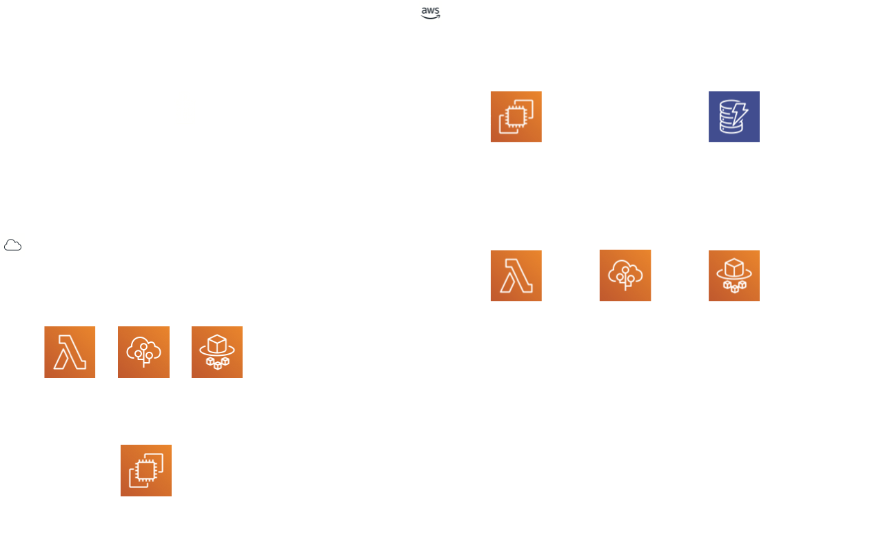
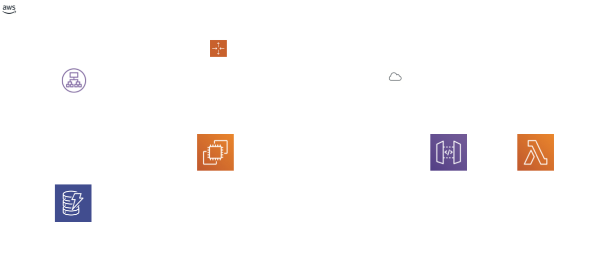
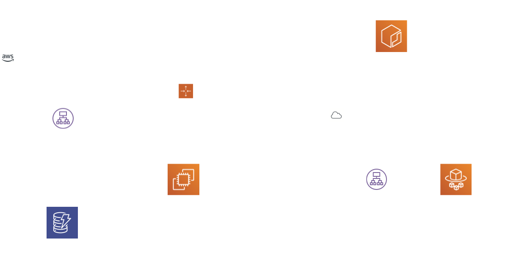
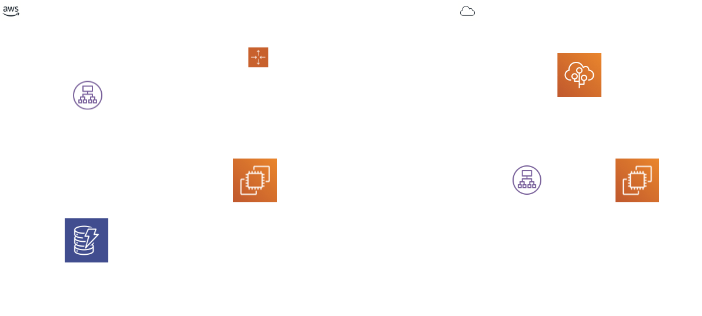

Recap
2021.1.22 at NTT DATA
このスライドの使い方

※当スライドは 「reveal.js」 を使って、GitHub Pages上に作成
振り返る内容
- ゲームのルール・環境構成
- 個人レベルでのふりかえり
- どれくらい効率的にトラブル対応できたのか？
- 自身の状況把握・事象/対応内容理解レベル
- AWSにおけるトラブルシューティングのイロハ
- チームとしてのふりかえり
- チームとして機能していたか？
- 役割分担
- 情報共有
- グループディスカッション
- 全体共有
- 以下の選択肢からもっとも近い答えを選択。
- うぇーい
- 楽しかったけど、むしろ悔しい。おかわり！
- ま、それなりに。私にはちょっと物足りなかったけどねフフフ
- ついていくのがやっとで正直楽しいとかそんな感情沸かなかったわ
- ここだけのところ、二度とやりたくない。。。
- 左のQRコードをスマホなどで読み取ってください
- スライドを開いている方はこちらのリンクから
- Zoomのチャット欄にもリンク掲載します



#!/bin/bash
export AWS_DEFAULT_REGION=ap-northeast1 #(1)実行しているリージョンを環境変数に設定
aws configure set region $AWS_DEFAULT_REGION #(2)インスタンスにリージョン情報を設定
cd /home/ec2-user/ #(3)ec2-userディレクトリに移動
yum install -y unzip python-pip #(4)pythonをインストール
# (5) X-Rayのデーモンをインストール ---ここから
curl -o xray.zip https://s3.amazonaws.com/aws-xray-assets.us-east-1/xray-daemon/aws-xray-daemon-linux-2.x.zip
unzip xray.zip #(6)
chmod +x ./xray && nohup ./xray &
# ---ここまで
# (6) サービスルータの起動 ---ここから
curl -o service-router.zip https://s3.amazonaws.com/ee-assets-prod-us-east-1/modules/gd2018/assets/service-router.zip
unzip service-router.zip
cd service-router
pip install -r requirements.txt
python service-router.py
# ---ここまで
from __future__ import print_function #Code should work with Python 2 or 3
from flask import Flask, request
import sys, os, json, random, logging, socket
import requests
import boto3
import watchtower
from aws_xray_sdk.core import xray_recorder
from aws_xray_sdk.ext.flask.middleware import XRayMiddleware
#Lets try and log Flask / Requests to Cloudwatch logs
logging.basicConfig(level=logging.INFO)
# use app.logger.info() for logging, as will ship to CWL
ROUTES = {} #Dict for Routes, will be DynamoDB
ROUTES["reverser"] = [] #Could be multiple same service
app = Flask(__name__)
#(1)他チームにアクセスするマイクロサービスのルーティング情報のアップデート
def update_routes():
"Function to update ROUTES, with microservice endpoint details, from dynamodb/service-table"
try:
dynamodb = boto3.resource('dynamodb')
table = dynamodb.Table('service-table')
for _ in range(5):
services = table.scan()
global ROUTES #need to declare its a global to modify it, cause threading
ROUTES = {}
for service in services['Items']:
if service['ServiceType'] not in ROUTES.keys():
ROUTES[service['ServiceType']] = [service['Endpoint'],]
elif service['Endpoint'] not in ROUTES[service['ServiceType']]:
ROUTES[service['ServiceType']].append(service['Endpoint'])
except:
app.logger.exception('update_routes() error')
#(2)ログ情報の出力
def json_log(message, status='info'):
#Helper function for adding JSON values in logs
log = {
'status':status,
'host':socket.gethostname(),
'service':'service-router',
'message': message
}
if status == 'info':
app.logger.info(json.dumps(log))
elif status == 'warning':
app.logger.error(json.dumps(log))
else:
app.logger.error(json.dumps(log))
#(3)APIの呼び出し
@app.route('/', methods=['GET', 'POST'])
def api():
"Our API logic, to route calls to correct microservices, and return the result"
if request.method == 'POST': #This code deals with API calls, and sends to microservice chain
#Lets update our micro service endpoints / routes.
#(3-1)ルーティング情報をアップデート
update_routes()
#(3-2)ログ情報を出力
json_log('Routes: {}'.format(repr(ROUTES)))
# Read the API payload, and pass on to external microservices
messageRequest = request.get_json()
json_log("Host {} received RequestId {}, asking for services: {}".format(socket.gethostname(),messageRequest['RequestId'],','.join(messageRequest['Services'])))
#(3-3)X-Rayデーモンにメトリクスデータを送信
xray_recorder.put_annotation("RequestId", str(messageRequest['RequestId']))
xray_recorder.put_metadata("Services", messageRequest['Services'])
xray_recorder.put_metadata("InputMessage", messageRequest['Message'])
routerResponse = {'Responses':[]}
errors = 0
#(3-4)サービスにアクセス
for service in messageRequest['Services']:
# Select a random microservice endpoint, from global ROUTES, updated from DynamoDB
service_endpoint = ""
try:
#(3-4-1)サービスにランダムに選択
service_endpoint = random.choice(ROUTES[service])
json_log('RequestId {} needs Service:{} using Endpoint:{}'.format(messageRequest['RequestId'],service,service_endpoint))
#(3-4-2)リクエストを送信
req = requests.post(service_endpoint, timeout=10, json={'RequestId':messageRequest['RequestId'],'Message':messageRequest['Message']}).json()
#(3-4-3)例外ハンドリング
except KeyError as e:
json_log('Request included a service we dont support, Shutting down server','error')
json_log('service-router may need HA config, or to run the latest code from the dashboard','warning')
service_endpoint = "Error"
func = request.environ.get('werkzeug.server.shutdown')
func() #Code isnt working correctly, quit so instance will be replaced.
#Comment out the lines from 'except KeyError' down to this comment, if you dont want the service-router to restart randomly
except Exception as e: #Catch any issues with upstream microservice
#If this code happens, our response will end up being invalid, as we didnt do each transformation
json_log('Error:"{}" connecting to Service:{} Endpoint:{}'.format(e, service, service_endpoint),'exception')
errors += 1
try:
#(3-4-4)レスポンスデータの生成
routerResponse['Responses'].append(req)#Add the microservice response to our list of responses
messageRequest['Message']=req['Message']
except Exception as e:
json_log('Bad response:"{}" from Service:{} Endpoint:{}'.format(e,service,service_endpoint),'exception')
errors += 1
#return an http 200, and our API output
#(3-5)X-Rayデーモンにメトリクスデータを送信
xray_recorder.put_metadata("ErrorCount", errors)
xray_recorder.put_metadata("Response", routerResponse)
if errors:
json_log('RequestId {} completed with {} errors'.format(messageRequest['RequestId'], str(errors)))
else:
json_log('RequestId {} completed successfully'.format(messageRequest['RequestId']))
return json.dumps(routerResponse), 200
return 'Service Map:\n {}'.format(repr(ROUTES)), 200
#(4)ルーティングしているサービス情報を返却するAPI
@app.route('/services', methods=['GET'])
def services():
#Return the service map the service-router is using
#This is required for the clients to know what services they can send us.
return json.dumps(ROUTES), 200
#(5)ヘルスチェックAPI
@app.route('/healthcheck', methods=['GET'])
def healthcheck():
#In case its useful to have a healthcheck
return 'OK', 200
#(6)メイン関数(起動クラス)
if __name__ == '__main__':
#This section just tries to turn on logging to Cloudwatch Logs, X-ray and runs webserver
#(6-1)アプリケーションサーバ環境構築
try:
handler = watchtower.CloudWatchLogHandler(log_group='service-router',)
app.logger.addHandler(handler)
#Silence noisy logging
logging.getLogger('botocore').setLevel(logging.CRITICAL)
logging.getLogger('werkzeug').setLevel(logging.CRITICAL)
except:
print('Couldn\'t start CW Logging')
#(6-2)ルーティング情報のアップデート
#Do first load of routes/endpoints/services from DDB
update_routes()
#Lets try to use AWS X-ray for metrics / logging if available to us
try:
#(6-3)X-Rayの設定
xray_recorder.configure(service='service-router', sampling=False, context_missing='LOG_ERROR')
XRayMiddleware(app, xray_recorder)
from aws_xray_sdk.core import patch
patch(('requests',))
except:
print('Failed to import X-ray')
json_log('New service-router instance {} has come online'.format(socket.gethostname()))
#(6-4)アプリケーション起動
#Run the flask webserver
app.run(host='0.0.0.0', port='80')

AWSTemplateFormatVersion: '2010-09-09'
Transform: AWS::Serverless-2016-10-31
Description: Deploy a unicorn-service-swapcaser with a SAM template
#(1)構築されるリソース
Resources:
#(1-1)Lambdaファンクションの定義
APIHandler:
Properties:
FunctionName: swapcaser
CodeUri: ./service-swapcaser.zip
Handler: app.app
MemorySize: 128
Role: !Sub arn:aws:iam::${AWS::AccountId}:role/TeamRole
Runtime: python3.6
Tracing: Active
Timeout: 3
Type: AWS::Serverless::Function
#(1-2)API GatewayからLambdaファンクションを実行する権限
APIHandlerInvokePermission:
Properties:
Action: lambda:InvokeFunction
FunctionName:
Ref: APIHandler
Principal: apigateway.amazonaws.com
SourceArn:
Fn::Sub:
- arn:aws:execute-api:${AWS::Region}:${AWS::AccountId}:${RestAPIId}/*
- RestAPIId:
Ref: RestAPI
Type: AWS::Lambda::Permission
#(1-3)REST API
RestAPI:
Properties:
DefinitionBody:
definitions:
Empty:
title: Empty Schema
type: object
info:
title: unicorn-service-swapcase
version: '1.0'
paths:
/:
#(1-3-1)GETメソッドの定義
get:
consumes:
- application/json
produces:
- application/json
responses:
'200':
description: 200 response
schema:
$ref: '#/definitions/Empty'
x-amazon-apigateway-integration:
contentHandling: CONVERT_TO_TEXT
httpMethod: POST
passthroughBehavior: when_no_match
responses:
default:
statusCode: '200'
type: aws_proxy
uri:
Fn::Sub: arn:aws:apigateway:${AWS::Region}:lambda:path/2015-03-31/functions/${APIHandler.Arn}/invocations
#(1-3-2)POSTメソッドの定義
post:
consumes:
- application/json
produces:
- application/json
responses:
'200':
description: 200 response
schema:
$ref: '#/definitions/Empty'
x-amazon-apigateway-integration:
contentHandling: CONVERT_TO_TEXT
httpMethod: POST
passthroughBehavior: when_no_match
responses:
default:
statusCode: '200'
type: aws_proxy
uri:
Fn::Sub: arn:aws:apigateway:${AWS::Region}:lambda:path/2015-03-31/functions/${APIHandler.Arn}/invocations
schemes:
- https
swagger: '2.0'
StageName: api
Type: AWS::Serverless::Api
#(2)アウトプット要素定義
Outputs:
APIHandlerArn:
Value:
Fn::GetAtt:
- APIHandler
- Arn
APIHandlerName:
Value:
Ref: APIHandler
EndpointURL:
Value:
Fn::Sub: https://${RestAPI}.execute-api.${AWS::Region}.amazonaws.com/api/
RestAPIId:
Value:
Ref: RestAPI
from __future__ import print_function #Code should work with Python 2 or 3
from chalice import Chalice
from aws_xray_sdk.core import xray_recorder
from aws_xray_sdk.core import patch
import hmac
import hashlib
import base64
import sys
import requests
import os
import boto3
import json
patch(('boto3','requests'))
app = Chalice(app_name='swapcaser')
app.debug = True
try:
#(1)SystemsManager ParameterStoreにアクセス
client = boto3.client('ssm')
response = client.get_parameter(Name='/unicornrentals/swapcaser/externalservice')
SWAPCASESERVICE = response['Parameter']['Value']
response = client.get_parameter(Name='/unicornrentals/team/teamid')
TEAMID = response['Parameter']['Value']
response = client.get_parameter(Name='/unicornrentals/team/teamhash')
HASH = response['Parameter']['Value']
except:
print("SSM unavailable - do you have the TeamRole attached")
print("You could setup envars")
SWAPCASESERVICE = os.getenv('SWAPCASESERVICE', False)
TEAMID = os.getenv('TEAMID', False)
HASH = os.getenv('HASH', False)
print("External Service set to: {}".format(SWAPCASESERVICE))
#(3)HMACで署名を作成
@xray_recorder.capture('sign')
def sign(key, message): #HMAC signing, sign with our teams secret hash
if sys.version_info[0] < 3: #HMAC bahavior for Python2
message = bytes(message).encode('utf-8')
key = bytes(key).encode('utf-8')
else: #HMAC bahavior for Python3
message = bytes(message, 'utf-8')
key = bytes(key, 'utf-8')
sig = hmac.new(key, message, hashlib.sha256)
return base64.b64encode(sig.digest()).decode()
#(4)ログを出力
@xray_recorder.capture('json_log')
def json_log(message, status='info', attrs={}):
#Helper function for adding JSON values in logs
log = {
'status':status,
'host':os.getenv('AWS_LAMBDA_FUNCTION_NAME'),
'service':'swapcaser',
'message': message,
'lambda': {'request_id': app.lambda_context.aws_request_id}
}
if attrs:
attributes = attrs.copy()
attributes.update(log)
log = attributes
print(json.dumps(log))
#(5)GET/POSTメソッドでのリクエスト処理
@app.route('/',methods=['POST', 'GET'])
@xray_recorder.capture('index')
def index():
request = app.current_request
json_log("Got a request", attrs=request.json_body)
if request.method == 'POST':
#(5-1)X-Rayにメトリクスを送信
xray_recorder.put_annotation("url", "/");
xray_recorder.put_annotation("method", "POST");
messageRequest = request.json_body
xray_recorder.put_annotation('request_body', repr(request.json_body))
json_log("Message request {}\n".format(repr(request.json_body)), attrs=request.json_body)
response = {'Message':'','Signature':[]}
message = messageRequest['Message']
json_log("Message sent to swapcase service", attrs=request.json_body)
try:
subsegment = xray_recorder.begin_subsegment('external_request')
req = requests.post(SWAPCASESERVICE, json={'Message':messageRequest['Message']}, timeout=2)
xray_recorder.put_annotation('external_service_body', req.text)
xray_recorder.put_annotation('call_external_service', req.status_code)
xray_recorder.end_subsegment()
#The external service may require anothey key soon, as below.
#req = requests.post(SWAPCASE_SERVICE, json={'Message':messageRequest['Message'],'ApiVersion':'2'}).json()
except requests.exceptions.Timeout:
#request took over 2 seconds, lets try again and hope not to go over 3 second lambda duration
#SWAPCASESERVICE ApiVersion 1 sometimes takes up to 8 seconds
json_log("External service took over 2 seconds. Retrying. By default swapcaser lambda has max 3 second runtime.",status='warning',attrs=request.json_body)
req = requests.post(SWAPCASESERVICE, json={'Message':messageRequest['Message']})
if req.status_code != 200:
json_log('External service 500: Inspect "external_request" trace in AWS Xray','error', request.json_body)
req.raise_for_status()
req = req.json()
json_log("Swapcase service request complete", attrs=request.json_body)
response['Message'] = TEAMID+req['Message']
#(5-2)レスポンスデータに署名を付与
response['Signature'] = sign(HASH, response['Message']) #Sign message with my team hash (or HASH)
json_log("Response from sign function {}\n".format(repr(response)), attrs=response)
return response
elif request.method == 'GET':
xray_recorder.put_annotation("url", "/");
xray_recorder.put_annotation("method", "GET");
return {'Status': 'OK'}

AWSTemplateFormatVersion: '2010-09-09'
Description: Sample CloudFormation template with YAML - ECS Task Definition
#(1)構築すべきリソース
Resources:
#(1-1)タスクロールの定義
SampleCloudFormationECSTaskExecutionRole:
Type: AWS::IAM::Role
Properties:
Path: /
AssumeRolePolicyDocument:
Statement:
- Action: sts:AssumeRole
Effect: Allow
Principal:
Service: ecs-tasks.amazonaws.com
ManagedPolicyArns:
- arn:aws:iam::aws:policy/service-role/AmazonECSTaskExecutionRolePolicy
#(1-2)タスク(コンテナ)定義
SampleCloudFormationECSTaskDefinition:
Type: AWS::ECS::TaskDefinition
Properties:
Family: sample-cloudformation-task
#(1-2-1)Fargateで構築
RequiresCompatibilities:
- Fagate
#(1-2-2)割り当てるメモリ
Memory: '1024'
#(1-2-3)割り当てるCPU
Cpu: '512'
NetworkMode: bridge
ExecutionRoleArn: !Ref SampleCloudFormationECSTaskExecutionRole
ContainerDefinitions:
- Name: unicorn-service-reverser
#(1-2-4)コンテナイメージ
Image: 753600854378.dkr.ecr.us-east-1.amazonaws.com/unicorn-service-reverser:latest
PortMappings:
#(1-2-5)コンテナ側のポート
- ContainerPort: 80
#(1-2-6)ホスト側のポート
HostPort: 0
Memory: 1024
#(1-3)サービス定義(起動するアプリケーション)
SampleCloudFormationECSService:
Type: AWS::ECS::Service
Properties:
#(1-3-1)起動するアプリケーション数
DesiredCount: 2
#(1-3-2)起動するタスク定義
TaskDefinition: !Ref SampleCloudFormationECSTaskDefinition
#(1-3-3)実行モード定義
LaunchType: Fargate
#(1-3-4)ロードバランサーのターゲットグループ定義
LoadBalancers:
- ContainerName: unicorn-service-reverser
ContainerPort: 80
TargetGroupArn: !Ref SampleCloudFormationPublicALBTargetGroup
#(1-4)ターゲットグループ定義(ロードバランサーがふり分けるターゲット)
SampleCloudFormationPublicALBTargetGroup:
Type: AWS::ElasticLoadBalancingV2::TargetGroup
Properties:
Name: sample-cfn-public-tg-default
VpcId:
Fn::ImportValue: Example-VPCID
Port: 80
Protocol: HTTP
HealthCheckPath: /index.html
HealthyThresholdCount: 2
TargetGroupAttributes:
- Key: deregistration_delay.timeout_seconds
Value: '20'
#(1-4)リスナー定義(ロードバランサーのリクエストを受けつけるリスナー)
SampleCloudFormationPublicALBListener:
Type: AWS::ElasticLoadBalancingV2::Listener
Properties:
LoadBalancerArn: !Ref SampleCloudFormationALB
Port: 80
Protocol: HTTP
DefaultActions:
- Type: forward
TargetGroupArn: !Ref SampleCloudFormationPublicALBTargetGroup
#(1-5)ロードバランサー定義
SampleCloudFormationALB:
Type: AWS::ElasticLoadBalancingV2::LoadBalancer
Properties:
Name: SampleALB
Subnets:
- Fn::ImportValue: Example-PublicSubnet1
- Fn::ImportValue: Example-PublicSubnet2
SecurityGroups:
- Fn::ImportValue: Example-SecurityGroupALB

from __future__ import print_function #Code should work with Python 2 or 3
#Service Reverser
from flask import Flask, Response, request
import json
import hmac
import hashlib
import base64
import sys
import boto3
import os, socket
import logging
from aws_xray_sdk.core import xray_recorder
from aws_xray_sdk.ext.flask.middleware import XRayMiddleware
#Import requests for the dynamic proxying healthcheck
import requests
application = Flask(__name__)
logging.basicConfig(level=logging.INFO,format='%(message)s')
logging.getLogger('werkzeug').setLevel(logging.CRITICAL)
# Attempt to get our region
try:
#(1) リージョンの設定
r = requests.get("http://169.254.169.254/latest/dynamic/instance-identity/document").json()
region = r.get('region')
boto3.setup_default_session(region_name=region)
print("Default region set to {}".format(region))
except:
print("Detecting region from EC2 metadata failed")
try:
#(2) SystemsManager Parameter Storeへアクセス
client = boto3.client('ssm')
response = client.get_parameter(Name='/unicornrentals/team/teamid')
TEAMID = response['Parameter']['Value']
response = client.get_parameter(Name='/unicornrentals/team/teamhash')
HASH = response['Parameter']['Value']
except:
print("SSM unavailable - do you have the TeamRole attached")
print("You could setup envars for TEAMID & HASH")
TEAMID = os.getenv('TEAMID', False)
HASH = os.getenv('HASH', False)
if not TEAMID and not HASH:
print("Critical Error: Environment variables TEAMID and HASH, not set.")
sys.exit()
try:
#(3) X-Rayの設定
xray_recorder.configure(service='l33t3r', sampling=False, context_missing='LOG_ERROR')
XRayMiddleware(application, xray_recorder)
except:
print('Failed to import X-ray')
#(4) ログ出力処理
@xray_recorder.capture('json_log')
def json_log(message, status='info', attrs={}):
log = {
'status':status,
'host':socket.gethostname(),
'service':'leeter',
'message': message,
}
if attrs:
attributes = attrs.copy()
attributes.update(log)
log = attributes
if status == 'info':
application.logger.info(json.dumps(log))
elif status == 'warning':
application.logger.error(json.dumps(log))
else:
application.logger.exception(json.dumps(log))
#(4) 署名を作成
@xray_recorder.capture('sign')
def sign(key, message): #HMAC signing, sign with our teams secret hash
if sys.version_info[0] < 3: #HMAC bahavior for Python2
message = bytes(message).encode('utf-8')
key = bytes(key).encode('utf-8')
else: #HMAC bahavior for Python3
message = bytes(message, 'utf-8')
key = bytes(key, 'utf-8')
sig = hmac.new(key, message, hashlib.sha256)
return base64.b64encode(sig.digest()).decode()
#(5) メッセージを変換
@xray_recorder.capture('transform')
def transform(response, message):
#transform replaces letters with numbers: o -> 0; e -> 3; l -> 1; t -> 7
message=message.replace('o','0')
message=message.replace('e','3')
message=message.replace('l','1')
message=message.replace('t','7')
message=message.replace('O','0')
message=message.replace('E','3')
message=message.replace('L','1')
message=message.replace('T','7')
response['Message'] = TEAMID+message
response['Signature'] = sign(HASH, response['Message']) #Sign message with my team hash
return response
#(6) GET/POSTリクエストを受け付けるAPI
@application.route('/', methods=['POST', 'GET'])
def index():
if request.method == 'POST':
json_log("Got a request", attrs=request.json)
messageRequest = request.json
response = {'Message':'','Signature':[]}
message = messageRequest['Message']
response = transform(response, message)
json_log("Response {}\n".format(repr(response)), attrs=response)
return json.dumps(response)
elif request.method == 'GET':
return json.dumps({'Status': 'OK'})
#(7) ヘルスチェック
#proxy health check, so we can configure any healthcheck to test our instance can reach a required endpoint
@application.route('/healthcheck/', methods=['GET'])
def healthcheck(path):
# Code snippet found here - must be safe to use:
# https://stackoverflow.com/questions/15463004/how-can-i-send-a-get-request-from-my-flask-app-to-another-site
# Lets pass a secret just in case
teamhash = request.args.get('teamhash')
if teamhash == HASH:
uri = "http://%s" % path
r = requests.get(uri)
return Response(
r.text,
status=r.status_code,
content_type=r.headers['content-type'],
)
else:
return "Authenticate with query parameter 'teamhash'", 401
#(8) メイン関数
if __name__ == '__main__':
application.debug = True
application.run()
個人レベルの振り返り
どれくらい環境構成や状況を押さえていましたか？
- 最も近かった状態を選んでください。
-
 もちろん、ざっと資材眺めて、ある程度把握してやってました。
もちろん、ざっと資材眺めて、ある程度把握してやってました。
-
 ま、そんなに細かく見てないですが、必要に応じて調べたりしてましたね。
ま、そんなに細かく見てないですが、必要に応じて調べたりしてましたね。
-
 全然何していいかよく分からずに、言われるがままにやってました。
全然何していいかよく分からずに、言われるがままにやってました。
-
- 左のQRコードをスマホなどで読み取ってください
- スライドを開いている方はこちらのリンクから
- Zoomのチャット欄にもリンク掲載します